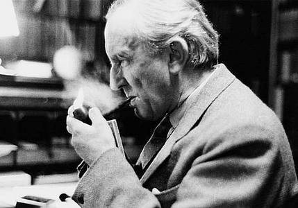

About J.R.R Tolkien
John Ronald Reuel Tolkien (3 January 1892 – 2 September 1973) was an English writer, poet, philologist, and academic, best known as the author of the high fantasy works The Hobbit and The Lord of the Rings. 
Index Page